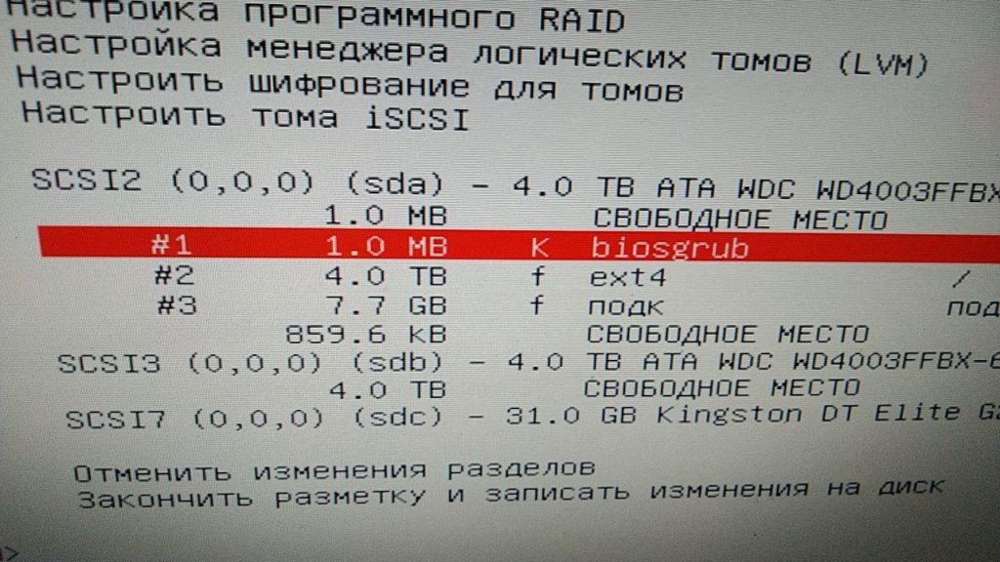

Во время установки Debian 10 на компьютер в котором было установлено 2 HDD по 4TB + был создан Raid 1 я столкнулся с этой ошибкой. Решение оказалось простым, хоть явно об этом нигде и не сказано.
Так вот система устанавливалась в Legacy, без всяких изысков во время разметки дисков.

На этапе установки Grub сталкивался со следующим:

В логах была одна интересная запись:
grub-install: warning: this GPT partition label contains no BIOS Boot Partition; embedding won’t be possible.
Интереса ради я решил разметить диск автоматом и инсталятор подкинул ответ:

Выяснилось, что на GPT дисках размером больше 2TB для установки в Legacy BIOS требуется создать раздел размером в 1мб с соотв. флагом.